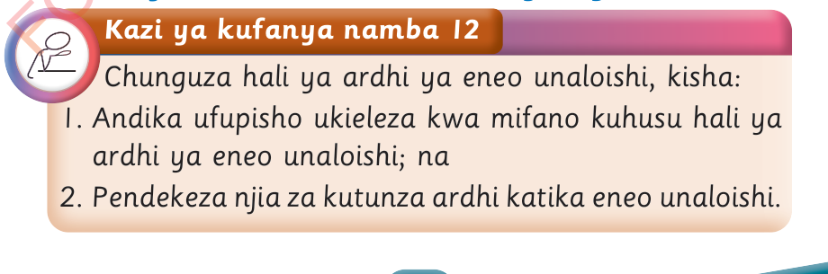
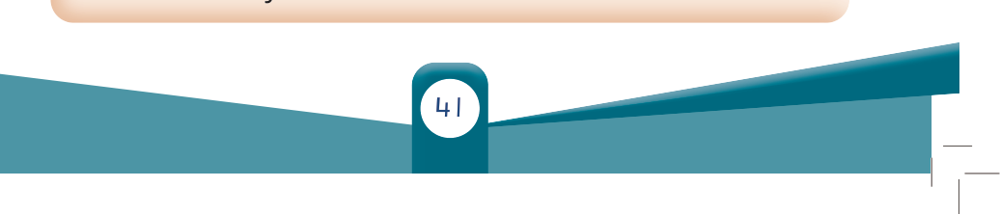

Utunzaji wa ardhi katika mazingira yetu

Kazi ya kufanya namba 12
Chunguza hali ya ardhi ya eneo unaloishi, kisha:
1. Andika ufupisho ukieleza kwa mifano kuhusu hali ya ardhi ya eneo unaloishi; na
2. Pendekeza njia za kutunza ardhi katika eneo unaloishi.
